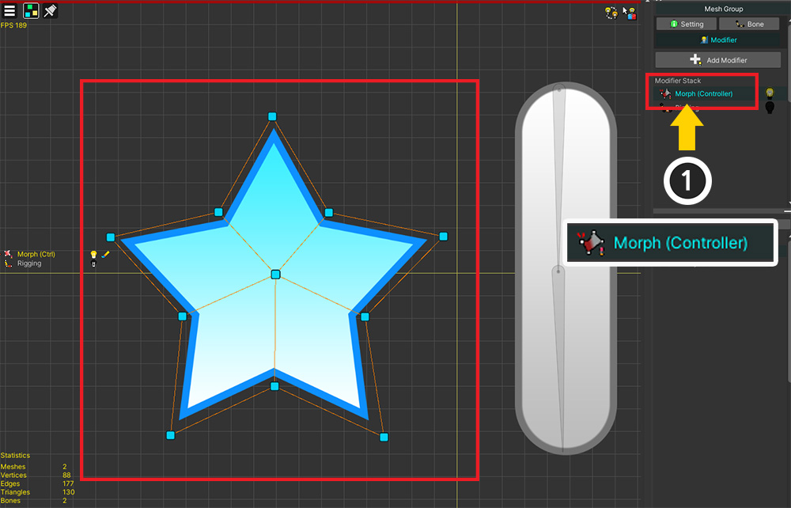
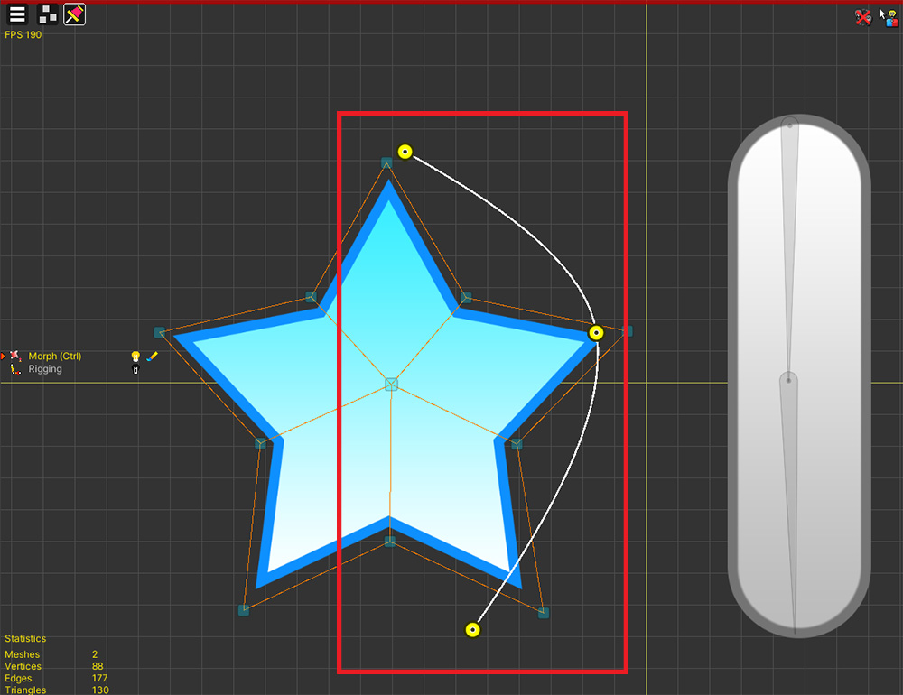
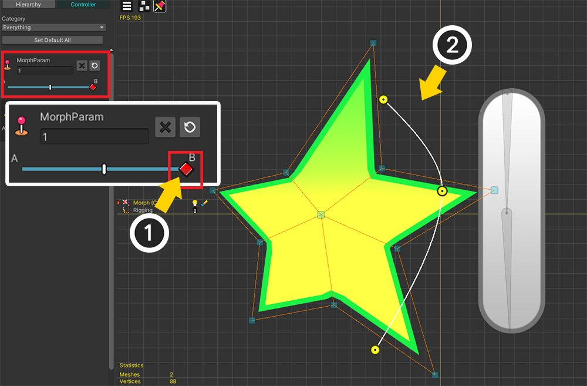
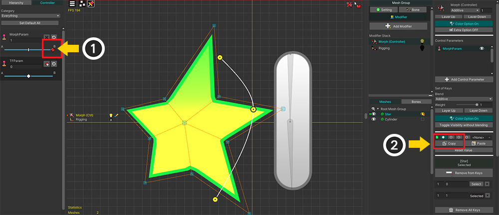

AnyPortrait > Manual > Paste/reset specifying Properties
Paste/reset specifying Properties
1.4.5
When editing a modifier that is associated with a control parameter, all data is always targeted when copying or resetting values.
By using the function added in AnyPortrait v1.4.0, the user can select the property to be copied or reset.

This is an example prepared for explanation.
These are the objects to move with Morph modifier and Transform modifier connected with control parameters.
This example explains the process of applying Morph to vertices and pins or applying Transform to bones and copying or resetting values.

(1) Added "Morph (Controller)" modifier.

Let's edit vertices as well as pins together with the Morph modifier.

(1) Register the control parameter to the modifier and add a key.
(2) Changed the position of the vertices and pins, and changed the color to yellow.
Now let's reset the values for the deformed shape or color in this state or copy it to another key.

(1) Press the Reset Value button.
(2) A dialog for selecting the type of value to be reset appears.

This is the configuration of this dialog.
1. Position of vertices or pins
2. Whether to target only selected vertices or pins
3. Mesh visibility, Color, Extra options
4. Execute reset or paste when selection is complete

If you select all and press the Apply button, all the transformed values are reset as above.

(1) Try to select only Pins and (2) press the Apply button now.

You can see that only the position of pins is reset, while other properties remain the same.

If only Color is selected, the shape is maintained and only color returns to the original value.

Let's reset some vertices.
(1) Select some vertices you want to reset.
(2) After pressing the Reset Value button, turn on only Vertices.
(3) Enable the Only Selected Vertices/Pins option and press Apply.

You can see that only the positions of the selected vertices are reset.

This function can also be used to copy a value to another key.
(1) Move the control parameter to the key whose value you want to copy.
(2) Press the Copy button to save the value to the slot.

(1) Move the control parameter to the key where the value will be pasted.
(2) Select the slot.
(3) Press the Paste button.
(4) A dialog box appears to select which value to paste. With only Vertices and Pins selected, let's press the Apply button.

You can see that the positions of the vertices and pins are copied.

Also, the same applies to Transform modifier.
(1) Added "Transform (Controller)" modifier.
(2) Press the Reset Value button to initialize the value, or press the Paste button.
(3) Instead of Vertices, Pins, you can set the value using the dialog with the Transform option.

In the case of animation, you can specify properties when pasting or initializing the value of the keyframe targeting the mesh.
Other targets' value is pasted or initialized regardless of properties.